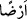
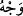

sûretinde zâhir oldu ve: “Yûsuf sizi kendisine kul etmek istiyor.” dedi. Yûsuf’un
kardeşleri: “Ey ihtiyar, çare nedir?” diye sordular. O da: “Yûsuf’u öldürün.” dedi.
“ya da onu” yırtıcı hayvanların yemesi veya orada ölmesi için yerleşim yerlerinden
uzak bilinmeyen ıssız “bir yere atın da”
“
” kelimesinin nekre ve mübhem bırakılmasının mânâsı budur. Yoksa neresi
olursa olsun bir yere bırakın denmek istenmiyor.
Burada sürgüne göndermenin öldürme ile eşdeğer olduğuna işaret edilmektedir.
Nitekim şu âyet de bunu göstermektedir: “Allah onlara sürgünü yazmamış olsaydı,
onlara dünyada mutlaka azap ederdi.” (el-Haşr, 59/3)
Zamane sultanları da başta şeyhler olmak üzere âlimleri uzak memleketlere sürgüne
göndererek, onları yavrularından ve tâbilerinden ayırarak sanki öldürmüş gibi
olmaktadırlar.
Genellikle
bu
sürgünleri
gerektirecek
bir
sebep
olmadan
yapıldıklarından dolayı böyle olmaktadır. Allah Teâlâ bizi de onları da ıslâh eylesin.
“babanızın teveccühü yalnız size kalsın.” Sizden başkasına iltifat etmeden tamamen
size yönelsin, size karşı sevgisi artsın.
Âyette “
(yüz)” kelimesinin zikredilmesi, Yâkub’un kendilerine yönelmesini tasvir
etmek içindir. Çünkü insan bir şeye yöneldiği zaman yüzüyle yönelir. Yalnız buradaki
yüz ile Yâkub’un zâtının kasdedilmiş olması da mümkündür.
“Ondan” yani Yûsuf’tan ya da onun işini bitirdikten “sonra da sâlih bir topluluk
olursunuz.” Yani babanızın yanındaki durumunuz iyileşir ya da yaptığınızdan dolayı
Allah’a tevbe edersiniz.
Bu da İblis’in hîlelerindendir. Emel sahrâsında sabredemeyenleri gelecekten
ümitlendirerek şöyle der:
Bugün günah işle yarın eyle tevbe.
Sonunda tefekkür ederler ki yarın özür dilemek için yarının ömrü gerekir. Halbuki
ömre güven yoktur.
Bugünün işini yarına bırakma zinhar
Çünkü yarına erişince yarının başka işi olur
Fakir (Bursevî) der ki: Hikmet ehlinden birinin: “İşte mü’min böyle olur, günahı
işlemeden tevbeyi hazırlar.” sözünden maksad, kendisine beşerî yönünün galip gelmesi
yüzünden sâdır olacak zelleler için tevbe etmeye daha baştan kesin olarak karar
vermektir. Yoksa temiz bir elbiseyi kirletip ondan sonra temizlemenin mânâsı yoktur.
Zehirlenen nice kimseler vardır ki panzehire (tiryak) ulaşamadan ölür gider. Panzehir
zehrin zararını yok eder zannıyla zehir içmek selim kalb ve düzgün akıl sâhiplerinin işi
değildir.